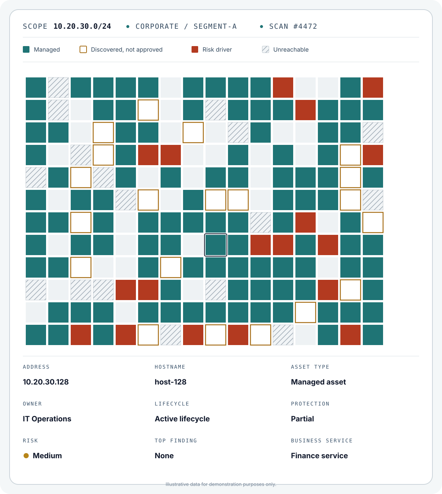

Network infrastructure
Routers, Layer 3 switches, firewalls and similar supported infrastructure are collected through supported adapters and gateway queries.
Move beyond a flat asset list with maintained identity, inventory, network, lifecycle, relationship and business context.
Cyobik transforms discovered network addresses into a structured asset view, helping teams distinguish managed assets, unapproved discoveries, unreachable systems and risk-driving assets.

Routers, Layer 3 switches, firewalls and similar supported infrastructure are collected through supported adapters and gateway queries.
Use the Cyobik Agent to automatically collect detailed hardware, operating system, software and other inventory information from Windows and Linux systems.
Create assets manually or import them through validated file-based workflows.
Keep hardware, operating system, software, firmware, users, services, running processes, network, patch and certificate information continuously up to date. Compare the current inventory with previous scans to identify added, changed or removed components.
Retain previously discovered assets when they become unreachable and identify lifecycle conditions that no longer match observed reachability.
Extract networks, subnets and VLANs from supported Layer 3 infrastructure, assign assets by IP, review utilisation and group networks by Zone or VRF.
Visualise observed logical or physical connections, confirm service membership and propagate business impact to supporting assets.
Bring identity, change, asset relationship and business-process information together in one place. Enable security and IT teams to understand the environment, assess risk and make better decisions from the same current data.